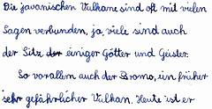
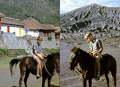

Dieter 1961: Die Javanischen Vulkane - Sitze der Götter
Die javanischen Vulkane sind oft mit vielen Sagen verbunden, ja, viele sind auch der Sitz einiger Götter und Geister. So vor allem auch der Bromo, ein früher sehr gefährlicher Vulkan. Die Maduresen, die rings um den Berg herum wohnen, nennen sich "Hindus". Sie verehren aber nicht Wishnu, Brahma, Schiwa und die anderen Hinduistischen Götter, sondern nur dern "Tuan" (Herrn), der im Bromo sein Haus hat. Einmal im Jahrzehnt kommt eine große Menschenmenge an den Krater des Vulkans. Dann wird dem "Tuan" geopfert, indem man Hühner, Geld und andere Sachen in den Schlot hineinwirft. Damals wusste man sogar am Bromo nicht viel über diese Zeromonie, es hieß, sie fände nur alle zehn Jahre statt. Inzwischen ist sie zum jährlichen Touristenereignis geworden, im Paket buchbar.
Dann zieht man wieder ab, ohne vorher viele Gebete oder Zeremonien begangen zu haben. Mit dieser Opferung beabsichtigt man, den Gott gut zu stimmen, damit er nie mehr seinen Bromo ausbrechen lasse.
Der Sonnenaufgang auf dem Bromo
Auch wir gedachten, dem Göttervulkan einen Besuch zu erstatten. Von Sukapura aus sollte unsere Fahrt beginnen. Wir übernachteten in einem kleinen Penginepan.
Um halb fünf des 21. November war schon alles startbereit. Den ersten Teil des Weges bis nach dem Dorf Ngadisari konnten wir mit unserem Opel zurücklegen.  Der Weg ging sehr steil nach oben. Kein Wunder, denn in 14 km mußten wir genau um tausend Meter steigen. Links und rechts waren oft so steile Abgründe, daß man nicht hinuntersehen konnte.
Sie redeten alle auf einmal auf uns ein, so daß man kein Wort verstand. Endlich erklärte uns einer, sie seien nichts anderes als Pferdevermieter. Ach so! Wir mieteten uns drei Pferde, nachdem der Preis natürlich erst um die Hälfte heruntergehandelt worden war.
Mein Pferd hieß "Manis", das heißt "süß". Es war sehr ehrgeizig, es wollte immer der Erste sein. Sobald wir auf einer freien Strecke angekommen waren, ging das Tier sofort in den Galopp über. Mamis Pferd hatte sich in meinen "Manis" verliebt und folgte ihm auf dem Fuße. Als ich dann meinem Tier die Zügel anzog, stellte es sich erst auf die Hinterfüße und rannte dann noch schneller weiter. mehr...